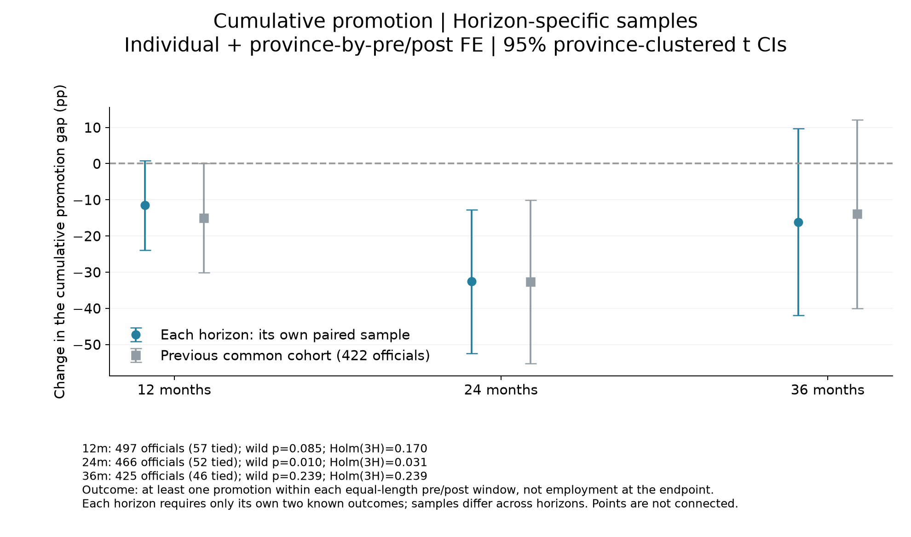
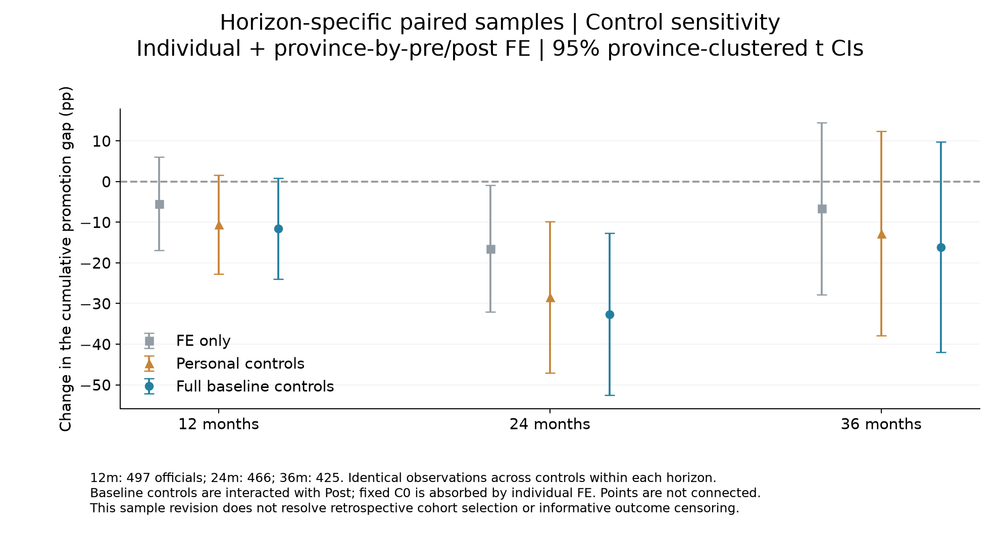
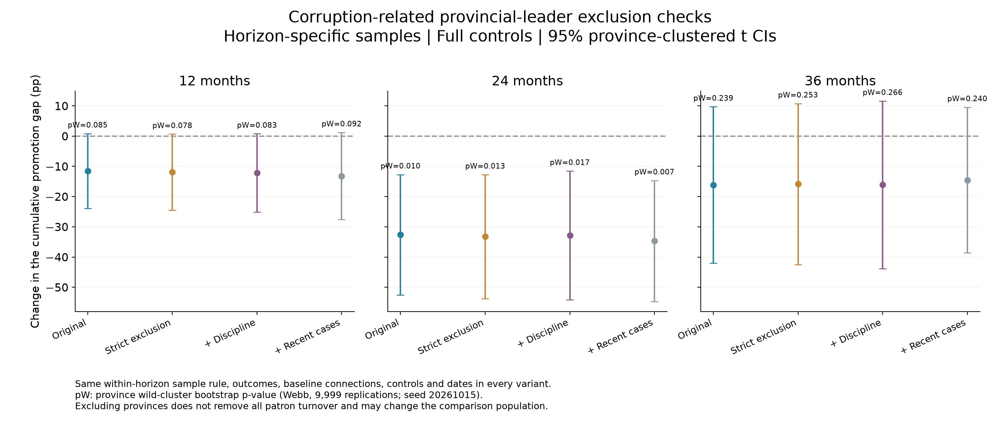

2026-10-21｜本次修改入样规则；保持晋升事件、关系基期、巡视日期、控制与主FE不变。原共同422人结果保留作对照。
Y(H)是窗内是否至少晋升一次，不是第H个月末是否仍任职。记录到窗内晋升即可确认1；没有记录到晋升时，要有足够完整的履历才能确认0，否则未知。等长前后窗口TWFE需要该H的前期和后期两条结果，但不再要求其他H也完整。只看巡视后一次结果不能估计这里的个人FE前后差分。
| variant | H | eligible_people | paired_known_people | horizon_unknown_people | singleton_people | people | rows | connected_people | provinces | connected_provinces | excluded_province_people | removed_connected_people |
|---|---|---|---|---|---|---|---|---|---|---|---|---|
| Original | 12 | 545 | 498 | 47 | 1 | 497 | 994 | 57 | 25 | 20 | 0 | 0 |
| Original | 24 | 545 | 467 | 78 | 1 | 466 | 932 | 52 | 25 | 18 | 0 | 0 |
| Original | 36 | 545 | 426 | 119 | 1 | 425 | 850 | 46 | 25 | 18 | 0 | 0 |
| 期限（月） | 人数 | 关系组人数 | θ（百分点） | 95%下限 | 95%上限 | 常规p | wild p | wild Holm(3H) |
|---|---|---|---|---|---|---|---|---|
| 12 | 497 | 57 | -11.5481 | -23.9466 | 0.8505 | 0.0665 | 0.0850 | 0.1700 |
| 24 | 466 | 52 | -32.6161 | -52.5330 | -12.6993 | 0.0025 | 0.0102 | 0.0306 |
| 36 | 425 | 46 | -16.1372 | -42.0040 | 9.7297 | 0.2102 | 0.2389 | 0.2389 |



| variant | H | b | lo | hi | p | p_wild | p_wild_holm_3H |
|---|---|---|---|---|---|---|---|
| Original | 12 | -11.5481 | -23.9466 | 0.8505 | 0.0665 | 0.0850 | 0.1700 |
| Strict | 12 | -11.8960 | -24.4533 | 0.6614 | 0.0622 | 0.0776 | 0.1552 |
| Plus_discipline | 12 | -12.1892 | -25.1711 | 0.7927 | 0.0643 | 0.0833 | 0.1666 |
| Plus_recent | 12 | -13.1957 | -27.6164 | 1.2250 | 0.0706 | 0.0923 | 0.1846 |
| Original | 24 | -32.6161 | -52.5330 | -12.6993 | 0.0025 | 0.0102 | 0.0306 |
| Strict | 24 | -33.2278 | -53.7184 | -12.7371 | 0.0028 | 0.0127 | 0.0381 |
| Plus_discipline | 24 | -32.8393 | -54.1493 | -11.5292 | 0.0043 | 0.0167 | 0.0501 |
| Plus_recent | 24 | -34.7252 | -54.7771 | -14.6733 | 0.0018 | 0.0066 | 0.0198 |
| Original | 36 | -16.1372 | -42.0040 | 9.7297 | 0.2102 | 0.2389 | 0.2389 |
| Strict | 36 | -15.8616 | -42.5044 | 10.7812 | 0.2300 | 0.2531 | 0.2531 |
| Plus_discipline | 36 | -16.1197 | -43.8674 | 11.6280 | 0.2404 | 0.2661 | 0.2661 |
| Plus_recent | 36 | -14.5364 | -38.6336 | 9.5607 | 0.2220 | 0.2395 | 0.2395 |
本次减少了为了跨期限统一名单而额外删人，但仍没有消除每个期限内的信息性删失。24／36个月前窗仍早于选人快照；原广义晋升仍含人大政协职级上升，事件标签待核验问题也未在本轮悄悄修改。各H样本不同，不能把系数跨H变化全解释为同一批人效应持续性。